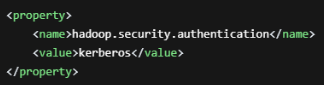

Before backing up an HDFS cluster, prepare related information as follows:
Item |
Mandatory |
How to Obtain |
To Be Used In |
|---|---|---|---|
hdfs-site.xml |
Yes |
For details, see Prerequisites. |
|
core-site.xml |
Yes |
||
Checking whether Kerberos authentication is enabled for the HDFS cluster |
Yes |
Check whether the value of hadoop.security.authentication in the core-site.xml file of the Hadoop cluster is kerberos. If information similar to the following is displayed, Kerberos authentication is enabled.  |
Item |
Mandatory |
How to Obtain |
To Be Used In |
|---|---|---|---|
Authentication username |
Yes |
Obtain the username from the big data platform administrator. NOTE:
Set this parameter to the human-machine username of the big data platform. The user must have the read, write, and execute permissions on the resources to be accessed. |
Item |
Mandatory |
How to Obtain |
To Be Used In |
|---|---|---|---|
Principal name of Kerberos authentication |
Yes |
Obtain the principal name from the Kerberos server administrator. NOTE:
|
|
.conf configuration file (for example, krb5.conf) used during Kerberos authentication |
Yes |
Contact the Kerberos server administrator to obtain the file from the Kerberos server. Take MRS as an example. For details about how to obtain the configuration file, see "Exporting an Authentication Credential File" in the MapReduce Service Product Documentation of the corresponding version. |
|
Password of the principal name |
No |
If Kerberos authentication is performed using a password, you need to obtain the password of the principal name. |
|
.keytab file |
No |
If Kerberos authentication is performed using a .keytab file, you need to obtain the .keytab file. Contact the Kerberos server administrator to obtain the file from the Kerberos server. Take MRS as an example. For details about how to obtain the configuration file, see "Exporting an Authentication Credential File" in the MapReduce Service Product Documentation of the corresponding version. |